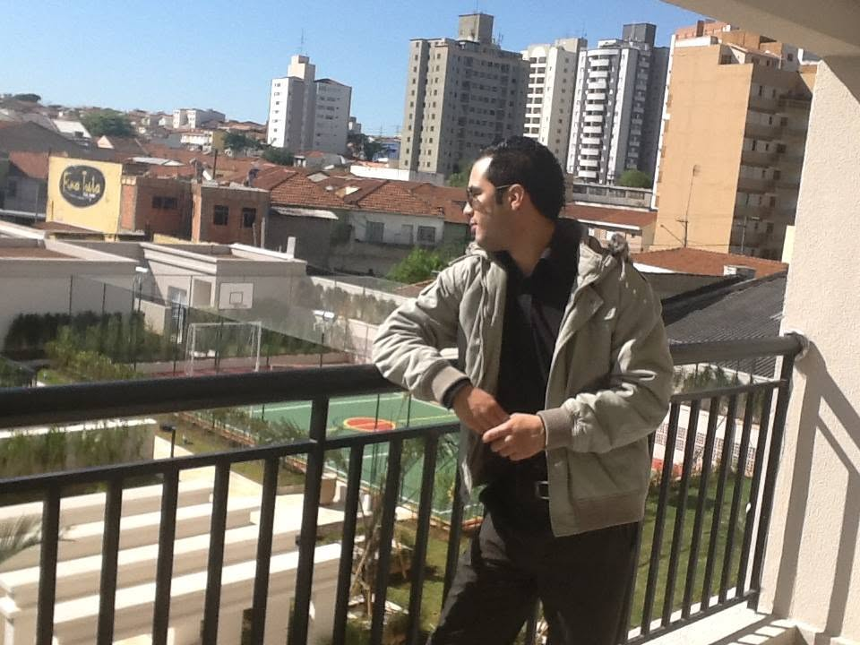

Se isso acontece na sua imobiliária, o problema não é a plataforma — e não é o corretor. Em 30 minutos, você descobre exatamente onde está o gargalo.
Agendar meu diagnóstico comercialGrátis · 30 minutos · On-line
O que dizem os donos de imobiliária
"Achei que o problema da imobiliária era falta de leads. Na consultoria ficou claro que o gargalo era o processo comercial. Saí da reunião sabendo exatamente o que precisava ajustar primeiro."
Carlos M.
Sócio de Imobiliária
"Foi a primeira vez que alguém analisou nossa operação inteira e mostrou onde estávamos perdendo vendas. Recebi um plano claro, sem enrolação, para gerar mais previsibilidade."
Rafael S.
Diretor Comercial
Veja se isso faz sentido?
Você não está sozinho — e o problema tem nome. A triagem do lead ainda acontece no WhatsApp do corretor. É o lugar mais caro e ineficiente para qualificar alguém. Quando isso muda, o corretor para de reclamar — e as visitas começam a acontecer.
Sei disso porque fui o corretor que recebia esses leads.
O que é o diagnóstico
Cada semana sem saber onde o lead some é uma semana de tráfego desperdiçado — e de corretor que vai perdendo energia para atender bem. O Diagnóstico dos 4 Pilares muda isso: 30 minutos para ver com clareza o que está quebrando e o que precisa mudar primeiro.
Pilar 1
Aquisição
De onde vêm os leads e qual a qualidade
Pilar 2
Qualificação
Quando e como o lead é filtrado
Pilar 3
Conversão
Lead qualificado → visita → venda
Pilar 4
Retenção
Base ativa e recorrência de negócios
O que continua acontecendo enquanto você não sabe onde está o buraco
Financeiro: cada mês investindo em tráfego sem rastrear o funil é dinheiro saindo sem saber o que retorna.
Oportunidade: as visitas que não acontecem porque o lead errado chega no corretor certo — e ele para de atender com energia.
Desgaste: o ciclo que não para — investe, lead chega, corretor reclama, mês fecha sem clareza, começa tudo de novo.
Posição: continuar sendo o dono que testa mas nunca descobre o que de fato funciona — enquanto quem tem sistema escala.
Agendar
Confirmação automática por e-mail e WhatsApp.
Como funciona
Você agenda acima
Escolhe o horário que tem disponível. Leva menos de 2 minutos.
Recebe uma ligação de validação
Nossa equipe entra em contato para entender melhor o momento da sua operação. Não conseguimos atender todas as imobiliárias — só trabalhamos com quem podemos genuinamente gerar impacto nas vendas. A ligação garante isso para os dois lados.
Diagnóstico em 30 minutos
Você sai sabendo exatamente onde está o gargalo — e qual é o próximo movimento certo para a sua operação.
O que você leva
Mapeamento do funil atual
Onde o lead entra, onde ele some — visualizado com clareza.
Identificação do gargalo principal
O ponto específico que está travando a conversão de lead em visita.
Próximo movimento claro com plano de ação
O que mudar primeiro nos próximos 30 dias para ver resultado real.
Resposta para "por que meu corretor reclama"
Com dados da sua operação — não suposições genéricas.
Por que confiar no diagnóstico
Em 2013 e 2014 eu era corretor. Prospecção ativa, malling onde fazia de 100 a 500 ligações por dia,
plantões de fim de semana — fui o cara que recebia o lead e tinha que decidir, no WhatsApp, se valia
ou não o esforço.
Eu sei o que é perder tempo com lead errado. Sei o que é corretor desmotivado. Hoje eu uso essa
experiência para ajudar donos de imobiliária a ter previsibilidade comercial na palma da mão.

Mais depoimentos
"Eu culpava o marketing pelos resultados, mas percebi que boa parte do problema estava na qualificação dos leads e no atendimento. A reunião mudou completamente nossa visão."
Juliana P.
Proprietária de Imobiliária
"Mesmo sem contratar nada, a consultoria já valeu muito. Saí com vários pontos que conseguimos aplicar imediatamente para melhorar nossos agendamentos e conversões."
Eduardo R.
Gestor de Imobiliária
Quem faz o diagnóstico
Junior Ferreira
Especialista em Marketing e Vendas para Imobiliárias
Comecei como corretor — prospecção ativa, malling, plantões de fim de semana. Vivi a rotina por dentro e entendi onde o processo quebrava antes de qualquer contato. Hoje uso essa visão e experiência para ajudar imobiliárias a qualificar o lead antes de chegar no corretor — e transformar tráfego em previsibilidade comercial.
Dúvidas frequentes
Não. O diagnóstico é real — você sai com informação útil independente de qualquer decisão. Não existe pitch durante a call. Se fizer sentido conversar sobre a assessoria, isso acontece depois e só se você quiser.
Sim. O diagnóstico é feito para imobiliárias que já investem em tráfego pago e querem entender por que o resultado não é proporcional ao investimento.
30 minutos. Objetivo e sem enrolação — você saberá o que mudar antes de desligar.
Só se fizer sentido para o seu momento — e só após o diagnóstico ser concluído.
Não é obrigatório. Mas se souber o quanto investe em tráfego por mês e quantos leads chegam ao corretor por semana, o diagnóstico fica mais preciso e as recomendações mais acionáveis.
Agende o diagnóstico. Em 30 minutos você terá mais clareza do que em meses tentando resolver sozinho.
Agendar agora — é gratuitoSem cartão. Sem compromisso.